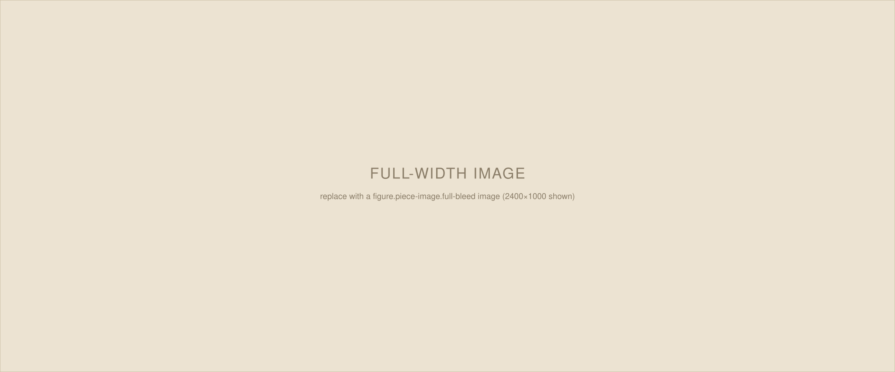

Category
Formatting Reference
This is the reading column: the width every paragraph sits inside. It’s deliberately narrow — about 68 characters per line — because a shorter measure is easier to track from one line to the next, especially at the generous line height used here.
Paragraphs get real space between them instead of touching margins, and there’s no first-line indent — this is a screen-reading convention, not a printed-book one. A link looks like this: underlined in a muted tone so it doesn’t compete with the text, and it turns to full color on hover. Every link should carry target="_blank" rel="noopener" so it opens in a new tab.
A subheading looks like this
Use an <h2> inside .piece-body to divide a long piece into named sections. For an unnamed beat or scene shift, use a section break instead:
That’s three characters, centered and letter-spaced, in a markup line that looks like this:
<p class="section-break" aria-hidden="true">* * *</p>
Pull quotes are for a single line worth setting apart — pulled out, centered, larger, and ruled off from the paragraphs around it:
A line worth reading twice belongs here, not buried in a paragraph.
The markup for that is a blockquote with class pull-quote, placed on its own between paragraphs — no need to also quote it in the body text above.
figcaption.For an image that should breathe — a landscape, a group shot, anything that wants room — add full-bleed to the figure and it spans the full width of the browser window, ignoring the reading column on either side:

full-bleed figure breaks out to the edges of the viewport; its caption stays aligned to the reading column.An ordinary inline quotation — someone else’s words, quoted in passing rather than pulled out for emphasis — uses a plain blockquote with no class:
Quoted material that’s part of the argument, not a highlight of it.
That covers every element currently in the system: paragraphs, subheadings, section breaks, pull quotes, inline quotes, reading-width images, and full-bleed images, plus link styling. Delete everything above this line in the body when starting a real piece, keeping only the structure you need.